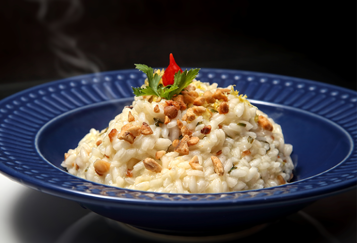
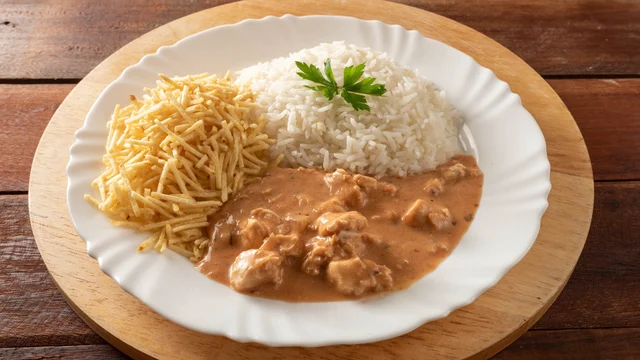
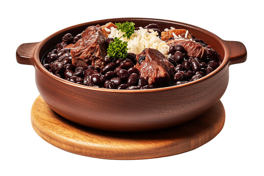
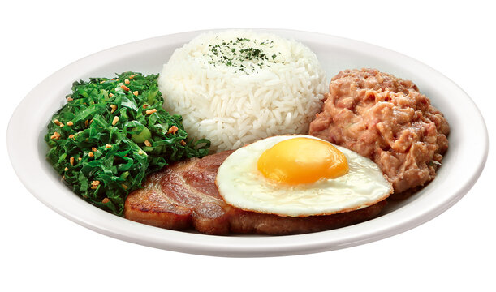

Ingredientes:
500g de espaguete.
200g de bacon ou pancetta em cubos.
3 ovos inteiros.
1 gema.
100g de queijo parmesão ralado.
Pimenta-do-reino a gosto.
Sal a gosto.
Modo de preparo:
1. Cozinhe o espaguete em água fervente com sal.
2. Enquanto a massa cozinha, frite o bacon em uma frigideira até ficar dourado e crocante.
3. Em uma tigela, misture os ovos, a gema, o queijo parmesão e bastante pimenta-do-reino.
4. Escorra o macarrão e coloque-o ainda quente na frigideira com o bacon.
5. Desligue o fogo e adicione a mistura de ovos e queijo, mexendo rapidamente para formar um molho
cremoso.
6. Sirva imediatamente com mais queijo parmesão por cima.

Risoto
Ingredientes:
2 xícaras de arroz arbório.
1 colher de sopa de manteiga.
1 cebola pequena picada.
1 dente de alho picado.
1 litro de caldo de legumes quente.
1/2 xícara de vinho branco.
1 caixa de creme de leite.
100g de queijo parmesão ralado.
Sal a gosto.
Pimenta-do-reino a gosto.
Salsinha para finalizar.
Modo de preparo:
1. Em uma panela, derreta a manteiga e refogue a cebola e o alho.
2. Acrescente o arroz arbório e mexa por cerca de 2 minutos.
3. Adicione o vinho branco e mexa até evaporar.
4. Vá colocando o caldo de legumes aos poucos, mexendo sempre.
5. Continue adicionando caldo conforme o arroz absorve o líquido.
6. Quando o arroz estiver cremoso e “al dente”, desligue o fogo.
7. Misture o creme de leite e o queijo parmesão.
8. Ajuste o sal, adicione pimenta-do-reino e finalize com salsinha.

Strogonoff
Ingredientes:
500g de peito de frango em cubos.
1 colher de sopa de manteiga ou óleo.
1 cebola picada.
2 dentes de alho picados.
1 caixa de creme de leite.
3 colheres de sopa de ketchup.
2 colheres de sopa de mostarda.
1/2 xícara de molho de tomate.
Champignon fatiado a gosto.
Sal a gosto.
Pimenta-do-reino a gosto.
Modo de preparo:
1. Em uma panela, aqueça a manteiga e refogue a cebola e o alho.
2. Adicione o frango e cozinhe até dourar bem.
3. Tempere com sal e pimenta-do-reino.
4. Acrescente o ketchup, a mostarda e o molho de tomate.
5. Misture os champignons e cozinhe por mais alguns minutos.
6. Desligue o fogo e adicione o creme de leite, mexendo até ficar bem cremoso.
7. Sirva quente com arroz branco e batata palha.

Feijoada
Ingredientes:
Para a feijoada.
1kg de feijão preto.
300g de carne seca.
300g de costelinha de porco.
200g de linguiça calabresa.
200g de paio.
150g de bacon picado.
1 cebola grande picada.
4 dentes de alho picados.
2 folhas de louro.
Sal a gosto.
Pimenta-do-reino a gosto.
Acompanhamentos
Arroz branco.
Couve refogada.
Farofa.
Laranja fatiada.
Modo de preparo:
1. Deixe a carne seca de molho por algumas horas, trocando a água para retirar o excesso de sal.
2. Cozinhe o feijão preto na panela de pressão por cerca de 30 minutos.
3. Em outra panela, cozinhe as carnes até ficarem macias.
4. Em uma panela grande, frite o bacon, a cebola e o alho.
5. Adicione as carnes, o feijão cozido e as folhas de louro.
6. Cozinhe em fogo baixo até o caldo engrossar e os sabores se misturarem bem.
7. Ajuste o sal e finalize com pimenta-do-reino.
8. Sirva com arroz branco, couve, farofa e laranja.
Salada Refrescante de Atum e Milho
Ingredientes:
2 latas de atum (em água ou óleo, escorrido).
1 lata de milho verde escorrido.
1/2 cebola picada bem fina.
1 tomate picado em cubos.
1/2 pimentão picado (opcional).
1/2 xícara de maionese.
Suco de 1/2 limão.
Sal a gosto.
Pimenta-do-reino a gosto.
Salsinha ou cebolinha picada.
Modo de preparo:
1. Em uma tigela, misture o atum, o milho, a cebola, o tomate e o pimentão.
2. Adicione a maionese e o suco de limão.
3. Tempere com sal e pimenta-do-reino.
4. Misture bem até ficar homogêneo.
5. Finalize com salsinha ou cebolinha picada.
6. Leve à geladeira por 20 a 30 minutos antes de servir (opcional).

Viarada a Paulista
Para o virado de feijão:
2 xícaras de feijão cozido.
1 concha do caldo do feijão.
1 cebola picada.
2 dentes de alho picados.
2 colheres de sopa de farinha de mandioca.
1 colher de sopa de óleo.
Acompanhamentos:
2 bistecas suínas.
2 linguiças calabresas.
2 ovos.
1 maço de couve fatiada.
2 bananas.
Arroz branco.
Sal e pimenta-do-reino a gosto.
Modo de preparo:
1. Virado de feijão.
2. Refogue a cebola e o alho no óleo.
3. Adicione o feijão e um pouco do caldo.
4. Acrescente a farinha de mandioca aos poucos, mexendo até formar uma mistura cremosa.
5. Acompanhamentos
6. Frite as bistecas e as linguiças até dourarem.
7. Refogue a couve rapidamente com alho.
8. Frite os ovos.
9. Corte as bananas ao meio e frite até ficarem douradas.
Caldo de mandioca
Ingredientes:
1kg de mandioca descascada.
200g de bacon picado.
1 linguiça calabresa fatiada.
1 cebola picada.
3 dentes de alho picados.
1 litro de água.
Sal a gosto.
Pimenta-do-reino a gosto.
Cheiro-verde picado para finalizar.
1 colher de sopa de óleo ou azeite.
Modo de preparo:
1. Cozinhe a mandioca na panela de pressão até ficar bem macia.
2. Bata a mandioca com parte da água do cozimento no liquidificador até formar um creme.
3. Em uma panela grande, aqueça o óleo e frite o bacon até dourar.
4. Acrescente a calabresa, a cebola e o alho, refogando bem.
5. Adicione o creme de mandioca à panela e misture.
6. Ajuste a consistência com água, se necessário.
7. Tempere com sal e pimenta-do-reino.
8. Cozinhe por mais alguns minutos até engrossar.
9. Finalize com cheiro-verde e sirva quente.
cuscuz
Ingredientes:
2 xícaras de flocão de milho.
1 xícara de água.
1 colher de chá de sal.
1 colher de sopa de manteiga (opcional).
Modo de preparo:
1. Em uma tigela, misture o flocão de milho com o sal.
2. Adicione a água aos poucos e misture bem.
3. Deixe a mistura descansar por cerca de 10 minutos para hidratar.
4. Coloque água na parte inferior da cuscuzeira.
5. Adicione o flocão hidratado na parte superior sem apertar muito.
6. Cozinhe em fogo médio por aproximadamente 10 a 15 minutos.
7. Retire o cuscuz da cuscuzeira e finalize com manteiga por cima.
Lançamentos da semana
Veja os pratos mais pedidos do momento
Penne ao Molho Quatro Queijos
Ingredientes:
500g de macarrão penne.
1 colher de sopa de manteiga.
1 caixa de creme de leite.
200ml de leite.
50g de queijo parmesão ralado.
50g de queijo mussarela.
50g de queijo provolone.
50g de queijo gorgonzola.
Sal a gosto.
Pimenta-do-reino a gosto.
Orégano para finalizar.
Modo de preparo:
1. Cozinhe o macarrão penne em água fervente com sal até ficar “al dente”.
2. Em uma panela, derreta a manteiga em fogo baixo.
3. Adicione o leite e o creme de leite, misturando bem.
4. Acrescente os queijos aos poucos, mexendo até derreter completamente.
5. Tempere com sal e pimenta-do-reino.
6. Misture o molho ao macarrão já cozido.
7. Finalize com orégano e mais queijo parmesão por cima.
Omelete de Queijo e Ervas
Ingredientes:
3 ovos.
2 colheres de sopa de leite (opcional, para deixar mais leve).
50g de queijo mussarela ou parmesão ralado.
Sal a gosto.
Pimenta-do-reino a gosto.
Salsinha picada.
Cebolinha picada.
Orégano ou manjericão a gosto.
1 colher de sopa de manteiga ou azeite.
Modo de preparo:
1. Em uma tigela, bata bem os ovos com o leite, sal e pimenta-do-reino.
2. Adicione o queijo e as ervas picadas, misturando bem.
3. Aqueça uma frigideira antiaderente com manteiga ou azeite.
4. Despeje a mistura e cozinhe em fogo baixo.
5. Quando começar a firmar, dobre a omelete ao meio.
6. Cozinhe por mais alguns segundos até o queijo derreter completamente.
7. Sirva ainda quente.
Baião de Dois
Ingredientes:
2 xícaras de arroz.
2 xícaras de feijão-de-corda cozido (com um pouco do caldo).
200g de carne seca dessalgada e desfiada.
150g de queijo coalho em cubos.
1 cebola picada.
3 dentes de alho picados.
2 colheres de sopa de manteiga ou óleo.
Cheiro-verde a gosto.
Sal a gosto.
Pimenta-do-reino a gosto.
Modo de preparo:
1. Dessalgue a carne seca deixando-a de molho por algumas horas e depois cozinhe até ficar
macia.
2. Em uma panela, aqueça a manteiga e refogue a cebola e o alho.
3. Adicione a carne seca desfiada e refogue bem.
4. Acrescente o arroz e misture.
5. Junte o feijão com um pouco do caldo e cozinhe até o arroz ficar macio.
6. Misture o queijo coalho e mexa levemente para derreter um pouco.
7. Ajuste o sal e a pimenta.
8. Finalize com cheiro-verde.
Sobremesas
Uma sobremesa irresistível, feita com carinho e ingredientes especiais, perfeita para adoçar qualquer momento do seu dia.
Pudim
Ingredientes:
Pudim.
1 lata de leite condensado.
2 medidas da lata de leite.
3 ovos.
Calda
1 xícara de açúcar.
1/2 xícara de água.
Modo de preparo:
Calda
1. Em uma panela, derreta o açúcar em fogo baixo até formar um caramelo dourado.
2. Acrescente a água com cuidado e mexa até dissolver.
3. Despeje a calda em uma forma de pudim e espalhe bem.
Pudim
1. Bata no liquidificador o leite condensado, o leite e os ovos.
2. Despeje a mistura na forma caramelizada.
3. Cubra com papel-alumínio.
4. Leve ao forno em banho-maria a 180°C por cerca de 1 hora e 20 minutos.
5. Deixe esfriar e leve à geladeira por pelo menos 4 horas.
6. Desenforme e sirva gelado.
Pavê
Ingredientes:
Creme.
1 lata de leite condensado.
2 colheres de sopa de amido de milho.
500ml de leite.
2 gemas.
1 colher de chá de essência de baunilha (opcional).
Ganache de chocolate.
200g de chocolate meio amargo.
1 caixa de creme de leite.
Creme
1. Em uma panela, misture o leite condensado, leite, amido de milho e as gemas.
2. Cozinhe em fogo baixo até engrossar, mexendo sempre.
3. Adicione a baunilha e reserve.
Ganache
1. Derreta o chocolate e misture com o creme de leite até formar um creme liso.
Arroz Doce
Ingredientes:
1 xícara de arroz.
2 xícaras de água.
1 litro de leite.
1 lata de leite condensado.
1/2 xícara de açúcar (opcional, dependendo do gosto).
1 pau de canela.
Casca de limão (opcional).
Canela em pó para finalizar.
Modo de preparo:
1. Cozinhe o arroz na água até ficar macio.
2. Adicione o leite, o pau de canela e a casca de limão.
3. Cozinhe em fogo baixo, mexendo de vez em quando.
4. Acrescente o leite condensado e o açúcar.
5. Continue mexendo até ficar cremoso.
6. Desligue o fogo e retire a canela e a casca de limão.
7. Sirva quente ou gelado, polvilhado com canela em pó.